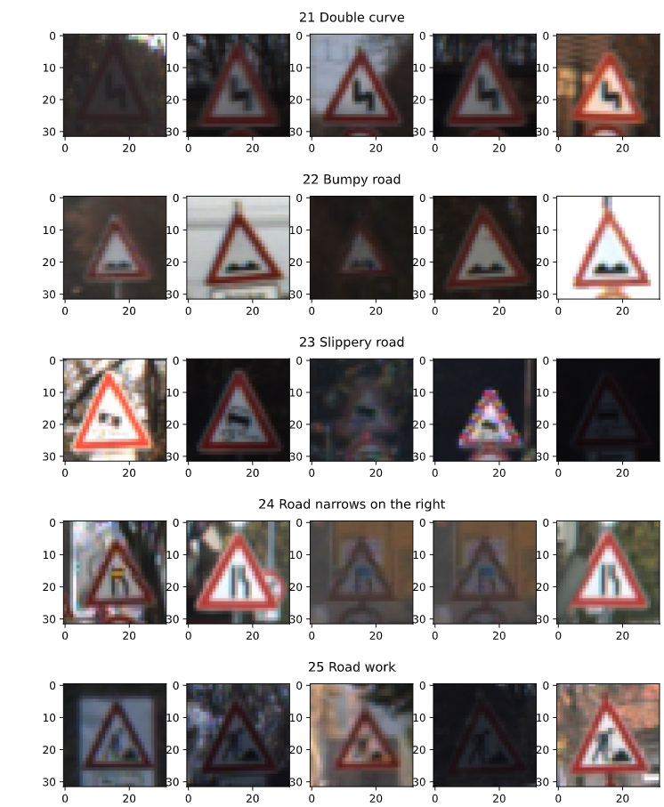

Traffic Sign Recognition - Basic Version
Writeup
Build a Traffic Sign Recognition Project
The goals / steps of this project are the following:
- Load the data set (see below for links to the project data set)
- Explore, summarize and visualize the data set
- Design, train and test a model architecture
- Use the model to make predictions on new images
- Analyze the softmax probabilities of the new images
- Summarize the results with a written report
Rubric Points
Here I will consider the rubric points individually and describe how I addressed each point in my implementation.
Writeup / README
1. Provide a Writeup / README that includes all the rubric points and how you addressed each one. You can submit your writeup as markdown or pdf. You can use this template as a guide for writing the report. The submission includes the project code.
You're reading it! and here is a link to my project code
Data Set Summary & Exploration
1. Provide a basic summary of the data set. In the code, the analysis should be done using python, numpy and/or pandas methods rather than hardcoding results manually.
I used the pandas library to calculate summary statistics of the traffic
signs data set:
- The size of training set is 34799
- The size of the validation set is 4410
- The size of test set is 12630
- The shape of a traffic sign image is (32, 32, 3)
- The number of unique classes/labels in the data set is 43
2. Include an exploratory visualization of the dataset.
Here is an exploratory visualization of the data set. First is a sample set of validation images available within the data set. The second image is a bar chart of validation images available for each of the unique classes. The red horizontal line is the average number of images per classes. This number could prove useful for Data Augmentation in the future.

Design and Test a Model Architecture
1. Describe how you preprocessed the image data. What techniques were chosen and why did you choose these techniques? Consider including images showing the output of each preprocessing technique. Pre-processing refers to techniques such as converting to grayscale, normalization, etc. (OPTIONAL: As described in the "Stand Out Suggestions" part of the rubric, if you generated additional data for training, describe why you decided to generate additional data, how you generated the data, and provide example images of the additional data. Then describe the characteristics of the augmented training set like number of images in the set, number of images for each class, etc.)
As a first step, I decided to convert the images to grayscale because they usually result in higher accuracy across various types of classification. I also presumed for a simplistic approach the average of the color channels should suffice making the processing a lot faster.
References:
- https://ieeexplore.ieee.org/document/7562656
THen I normalized the image to have a mean 0 and unit variance. Here is an example of pre processing on a traffic sign.
2. Describe what your final model architecture looks like including model type, layers, layer sizes, connectivity, etc.) Consider including a diagram and/or table describing the final model.
My final model consisted of the following layers:
| Layer |
Description |
| Input |
32x32x3 RGB image |
| Convolution 5x5x1x6 |
1x1 stride, valid padding, outputs 28x28x6 |
| RELU |
|
| Max pooling |
2x2 stride, outputs 14x14x6 |
| Convolution 5x5x6x16 |
1x1 stride, valid padding, outputs 14x14x16 |
| RELU |
|
| Max pooling |
2x2 stride, outputs 10x10x16 |
| Flatten |
output = 400 |
| Fully connected |
Weights (400x120) Bias 120 Output 120 |
| RELU |
|
| Fully connected |
Weights (120x84) Bias 84 Output 84 |
| RELU |
|
| Fully connected |
Weights (84x43) Bias 43 Output 43 |
3. Describe how you trained your model. The discussion can include the type of optimizer, the batch size, number of epochs and any hyperparameters such as learning rate.
To train the model, I used:
- Adam Optimizer
- Batch Size of 128
- Epocs of 60
- Learning Rate of .001
4. Describe the approach taken for finding a solution and getting the validation set accuracy to be at least 0.93. Include in the discussion the results on the training, validation and test sets and where in the code these were calculated. Your approach may have been an iterative process, in which case, outline the steps you took to get to the final solution and why you chose those steps. Perhaps your solution involved an already well known implementation or architecture. In this case, discuss why you think the architecture is suitable for the current problem.
My final model results were:
- validation set accuracy of 93.6
- test set accuracy of 93.1
If an iterative approach was chosen:
The only parameters that were varied in the design was the number of EPOCHS and learning rate. A low number of epochs or a high leaning rate resulted in sub par accuracy.
Test a Model on New Images
1. Choose five German traffic signs found on the web and provide them in the report. For each image, discuss what quality or qualities might be difficult to classify.
Here are eight German traffic signs that I found on the web:
The algorithm had a tough time classifying the Road Work sign. Its more degraded and blurry than the others and there is little distriction between the actual and detected classes at the level of quality.
2. Discuss the model's predictions on these new traffic signs and compare the results to predicting on the test set. At a minimum, discuss what the predictions were, the accuracy on these new predictions, and compare the accuracy to the accuracy on the test set (OPTIONAL: Discuss the results in more detail as described in the "Stand Out Suggestions" part of the rubric).
Here are the results of the prediction:
| Image |
Prediction |
| Speed Limit (30km/h) |
Speed Limit (30km/h) |
| Right of way at the next intersection |
Right of way at the next intersection |
| Priority Road |
Priority Road |
| General Caution |
General Caution |
| Road Work |
24,Road narrows on the right |
| Speed Limit (60km/h) |
Speed Limit (60km/h) |
| Turn Left Ahead |
Turn Left Ahead |
| Keep Right |
Keep Right |
The model was able to correctly guess 7 out of 8 of the traffic signs, which gives an accuracy of 87.5P%.
3. Describe how certain the model is when predicting on each of the five new images by looking at the softmax probabilities for each prediction. Provide the top 5 softmax probabilities for each image along with the sign type of each probability. (OPTIONAL: as described in the "Stand Out Suggestions" part of the rubric, visualizations can also be provided such as bar charts)
Shown below if the performance of my classifier , where the prediction was perfect:
(Optional) Visualizing the Neural Network (See Step 4 of the Ipython notebook for more details)
1. Discuss the visual output of your trained network's feature maps. What characteristics did the neural network use to make classifications?
I also viewed the features extracted by my first two convolution layers. The output of the first layer looks almost like an edge detection algorithm. The feature map from the second layer seems to focus on different individual pieces of the detected edges.